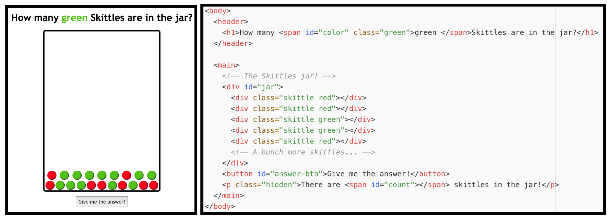

CSE 154
Lecture 7: More DOM/Events in JS
Agenda
Review JS Basics: "Types", Booleans, and Functions
Notion of Objects in JS: DOM and Events
- Accessing DOM elements
- Handling page events with with
addEventListener - Changing styles with
classList
More JS Basics
Review Mystery Box
On Friday, we wrote a code/small JavaScript program to:
- Implement a function
openBoxto change thesrcandaltattributes of an image - Attach an "event listener" to attach a callback function
openBoxto the click event - Put our button event listener in an
initfunction to be called when the window's "load" event is fired and the document is available
The "module pattern"
"use strict";
(function() {
statements;
})();Wraps all of your file's code in an anonymous function that is declared and immediately called
0 global symbols will be introduced!
The variables and functions defined by your code cannot be accessed/modified externally
We'll use this pattern moving forward for all of our programs.
JavaScript File Skeleton
/**
* Name, section, date, etc.
* Description of program
*/
"use strict";
(function() {
// phew! your code goes here
})();JS
Thinking about Page Behavior
When you're first learning JavaScript, it is not uncommon to find it difficult to keep track of the many different things involved in page interactions (types of events, DOM elements, user input, etc.).
But it's really not that complicated if you break it down before starting the code.
What's involved in a page event?
source.addEventListener("event", response);
function response() {
// response behavior with possible output/document elements changed
}- The source listening to the event, such as a
button, dropdown, paragraph, etc.). You can
also have the window as a source to listen (always for the
loadevent, sometimes for various key events likekeypress). - The event listened to by a source object (e.g. click, load, mouseover, keypress).
- The response for the event (e.g. elements changed)
So how do I get started with adding interactivity to my page?
CP2 External Requirements
- Add event listener to a source element, and respond
- What is your source?
- What is your event(s)?
- What is the response behavior? Do any elements change as a result?
- Add/remove elements in the DOM as a response to an event.
Draw tables and wireframes!
The Notion of "Objects" in JavaScript
Anything you interact with on the page is an object. An object in JavaScript has:
- a set of properties (e.g. textContent for DOM objects)
- built-in functions (e.g.
addEventListener). Some objects have different properties/functions than others.
It is helpful to think of the following "types" of objects in JavaScript:
- Window and Global DOM objects
- Objects inside the
document(which is a Global DOM object) - Event objects (yes, events are objects!)
The window and the DOM
The window is a global object your JavaScript programs have access to, representing the browser window.
Has access to the "DOM" document tree - the "load" event is fired when the DOM tree is done loading on the page.
The document object gives access to all page content (body, body's children, etc.)
Listening to the window "load" event
You can only access document elements after the "load" event has fired.
"use strict";
(function() {
window.addEventListener("load", init);
// no access to the document here
function init() {
// we now have access to the DOM tree!
// set up your initial document event handlers here.
}
})();JS
So once our DOM is ready, how do we get our page elements?
- Ask for them by id:
document.getElementyById(...) - Query for them with CSS style selectors:
document.querySelector(...)document.querySelectorAll(...)
- Make new ones!
document.createElement(...)(Wednesday)
CSS Selector Review
What is the CSS selector to select all skittle elements with the "skittle" class?
Selecting Groups of DOM Objects
Methods in document and other DOM objects:
| Name | Description |
|---|---|
| querySelector(selector) | returns the first element that would be matched by the given CSS selector string |
| querySelectorAll(selector) | returns a collection of all elements that would be matched by the given CSS selector string |
Examples
let gameColorElement = document.getElementById("color");
let skittles = document.querySelectorAll(".skittle");
let greenSkittles = document.querySelectorAll(".green.skittle");
let greenSkittleCount = greenSkittles.length;
let firstSkittle = document.querySelector(".skittle");
// same as skittles[0];JS
Common querySelectorAll issues
Many students forget to write . or # in front of a class or
id
// get all elements with class of ".skittle"
let skittles = document.querySelectorAll("skittle");
let skittles = document.querySelectorAll(".skittle");
JS
querySelectorAll returns an array, not just a single element;
you must loop over the results
// hide all skittles
qsa(".skittle").classList.add("hidden");
let skittles = document.querySelectorAll(".skittle");
for (let i = 0; i < skittles.length; i++) {
skittle.addEventListener("click", eatSkittle);
}JS
Q: Can I still select a group of elements using querySelectorAll even if
my CSS file doesn't have any style rule for that same group?
(A: Yes!)
Handy Shortcut Functions
We will use document.getElementById and
document.querySelectorAll a LOT. It's handy to
declare a shortcut to help us out. You may use the following in your JS
functions (these are exceptions to the rule of having description function
names).
/**
* Returns the element that has the ID attribute with the specified value.
* @param {string} idName - element ID
* @returns {object} DOM object associated with id.
*/
function id(idName) {
return document.getElementById(idName);
}
/**
* Returns the array of elements that match the given CSS selector.
* @param {string} selector - CSS query selector
* @returns {object[]} array of DOM objects matching the query.
*/
function qsa(selector) {
return document.querySelectorAll(selector);
}
/**
* Returns the first element that matches the given CSS selector.
* @param {string} selector - CSS query selector.
* @returns {object} The first DOM object matching the query.
*/
function qs(selector) { // less common, but you may find it helpful
return document.querySelector(selector);
}JS
We will start using these in examples!
A Provided JS Template
We have provided a template you can refer to for the standard JS program structure
here.
However, you are expected to replace the example functions and comment examples with your own (you may use
the same JSDoc comments for id, qs, and qsa as is though).
Event Handling
We can use JavaScript to attach functions to elements when an event (e.g. "click") occurs.
To do so, we need to:
- Identify the source element to listen for an event
- Indicate the
eventto trigger a response - Specify the response function(s) to call when the event is triggered.

Once we have this information, we can use addEventListener to hook everything up!
Event Listeners
We have two functions to manage events and response functions for elements
Use addEventListener to attach an event listener
Use removeEventListener to detach an event listener (must provide a named function reference that has been added for the listened event)
addEventListener with one event

addEventListener with multiple events

addEventListener with the Mystery Box page

removeEventListener

Removing Event Listeners: Example
function init() {
let box = document.getElementById("box");
box.addEventListener("mouseover", mouseOverResponse);
box.addEventListener("dblclick", turnOffBox);
}
function mouseOverResponse() {
console.log("You moved the mouse over a box!");
}
function turnOffBox() {
let box = document.getElementById("box");
box.removeEventListener("mouseover", mouseOverResponse);
console.log("You turned off the box!");
}JS
Running solution: box-events.html
Practice On Your Own
What if we wanted to click the image instead of the button to "open the box"?
What if we wanted to add two more buttons to hide/show the box?
Events are also Objects!
Recall that the event handler function can be attached to objects (window, DOM elements, etc.)
sourceEl.addEventListener("click", responseFunction);
function responseFunction(e) {
// we can access the click Event object here!
}JS
When the event occurs, an Event object is created and passed to the event listener. You can "catch" this event object as an optional parameter to get more information about the event.
Example: event-objects.html
Common Types of JavaScript Events
| Name | Description |
|---|---|
| load | Webpage has finished loading the document |
| scroll | User has scrolled up or down the page |
| click | A pointing device (e.g. mouse) has been pressed and released on an element |
| dblclick | A pointing device button is clicked twice on the same element |
| keydown | Any key is pressed down |
| keyup | Any key is released |
| mouseenter | A pointing device is moved onto an element that has the attached listenere |
| mouseover | A pointing device is moved onto the element that has the listener attached to itself or one of its children |
| mousemove | A pointing device is moved over an element |
| mousedown | A pointing device button is pressed on an element |
| mouseup | A pointing device button is released over an element |
We'll cover more later (you can find a full list here),
but today we'll demo click!
Event Object Properties
Event objects contain properties about an event that occurred
What types of properties do you think an Event object has?

The Optional Event Listener Parameter
JavaScript gives us a really useful way to get more information about an event that fired the callback function by accepting an optional parameter to the attached function representing the event object.
Conventionally this event object is given the name "e" or "evt"
demoBtn.addEventListener("click", logClickData);
function logClickData(e) {
console.log("Button clicked!");
console.log(e.type); // "click"
console.log(e.currentTarget); // "#add-btn"
console.log(e.timestamp); // timestamp the event was created (in milliseconds)
}JS
Hiding/Showing Elements
How can we hide display an HTML element?
.hidden {
display: none;
}CSS
In JS, it's possible to modify the style properties of an element directly.
id("box-img").style.display = "none";JS
What's wrong with that?
How can we add/remove CSS classes with JS?
Modifying the classList
You can manipulate the DOM element's classList with the following methods:
| Name | Description |
|---|---|
| add(classname) | Adds the specified class(es) to the list of classes on this element. Any that are already in the classList are ignored. |
| remove(classname) | Removes the specified class(es) to the list of classes from this element. Any that are already not in the classList are ignored without an error |
| toggle(classname) | Removes a class that is in the list, adds a class that is not in the list. |
| contains(classname) | Returns true if the class is in the DOM element's classList, false if not. |
| replace(oldclass, newclass) | Replaces the old class with the new class. |
Breaking Down a UI Spec
Over this Module, we will take what we learn about JavaScript, events, and the DOM, to work on implementing a game for a user to guess the correct number of Skittles in a jar having a certain color.
For now, we'll just focus on some basics to practice with the DOM, querySelectorAll, and events.
You can find the simplified starter code here, which we used to practice querySelectorAll and classList. We'll build off of this
more on Wednesday.